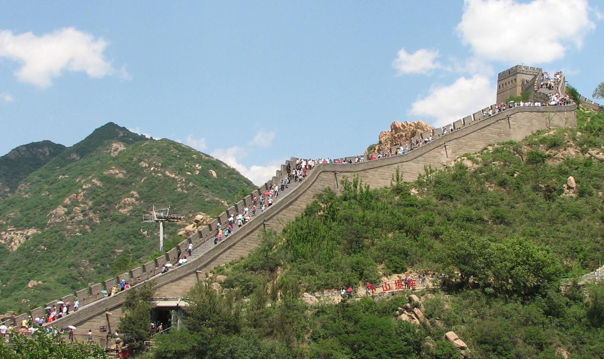
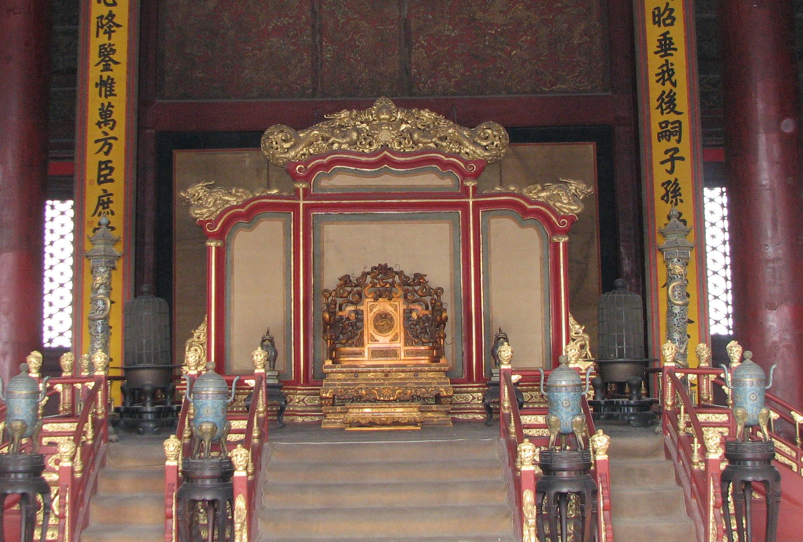
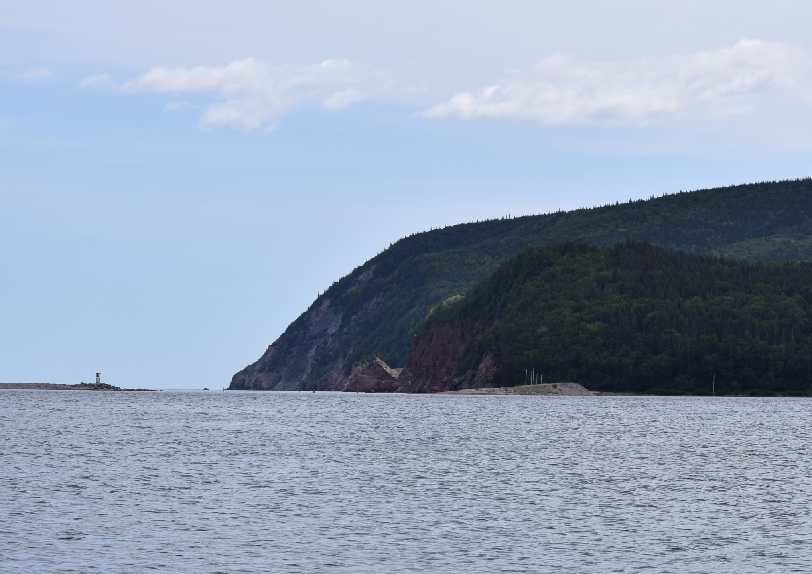
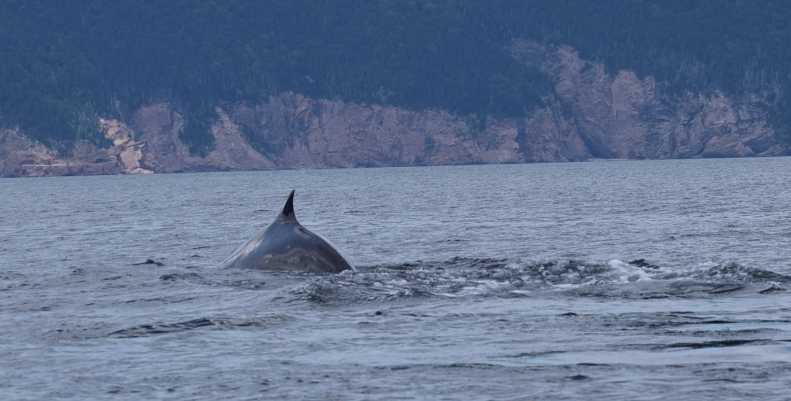
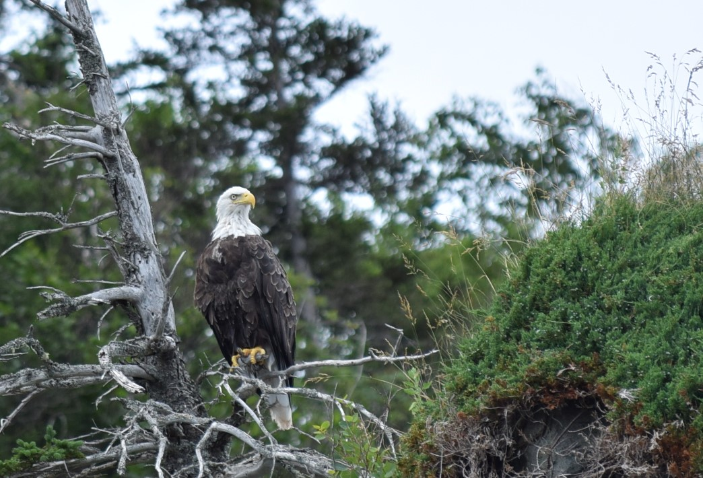
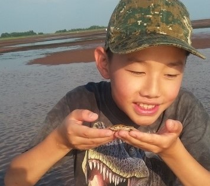
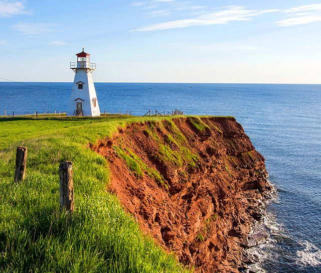
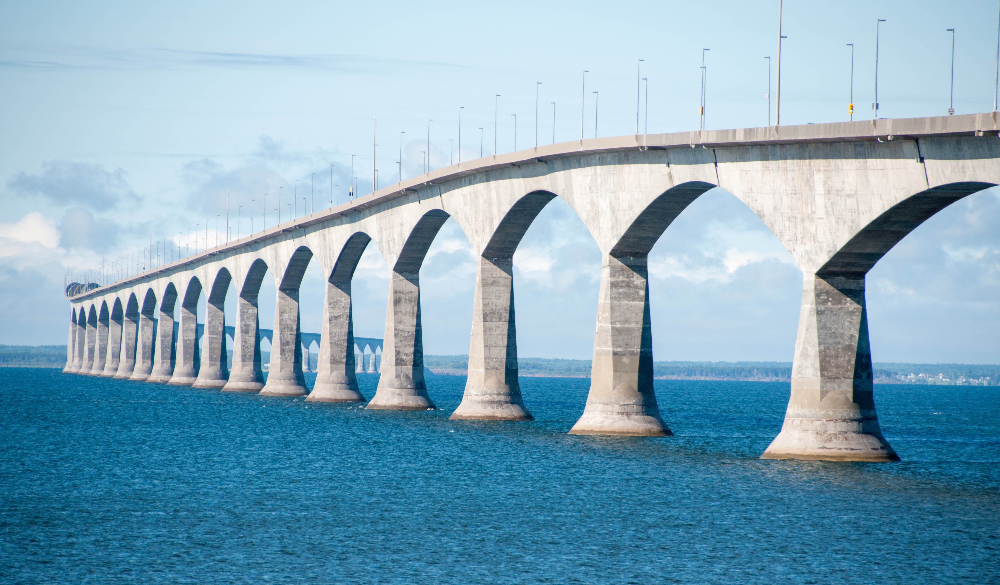

Many of my relatives live in China, so that's where my family and I go to visit them every few years! We usually stay in China for a couple weeks exploring the different cities from Shang Hai to Nan Chang. Everytime we go back to China to see our grandparents, they are sure to cook up some delicious food that I just can't have enough of! Some memorable locations we visited include The Great Wall of China, The Forbidden City, and Tian An Men Square. Here are some photos:
 In Nova Scotia, I was able to go on a boat ride to watch whales, seals, and other fascinating wildlife. It was really fun because my brother and I were seeing who could predict where the next whale would pop up. We also ate a lot of seafood like lobster, fish, and chowder. Yum!
  Despite its small size, PEI was an experience to remember! After crossing the Confederation Bridge, my family and I were able to explore the ocean in the evening at low tide when the water had been swept back. We saw so many tiny creatures such as crabs and got to collect some large clams right out of the squishy sand (we only kept the clams)! I actually picked up a dead crab and my hand stunk for a whole week!
  We went to Blue Mountain in the summer and were able to do so many exciting activities including paddle boating, riding the gondola, and going on the low ropes. Unfortunatley, there was a rainstorm on our first day there! Nonetheless, we managed to finish most of the activities before going home! Here are some photos and a ranking of my favorite activities:
| Ranking | Activity Name | Reason for Ranking | Link to Activity on Website |
|---|---|---|---|
| 1 | Ridge Runner Mountain Coaster | As someone who isn't a big fan of roller coasters, I didn't have high hopes for this one, but it really blew me away (literally and figuratively)! The drops weren't too bad and you could even control your own speed with brakes! | Ridge Runner Mountain Coaster |
| 2 | Cascade Putting Course | A peaceful game that tests your skill! It was fun competing with my family in minigolf and discovering new and efficient ways to knock the ball into the hole. | Cascade Putting Course |
| 3 | Wind Rider Triple Zips | What an amazing experience! It was exciting and a little frightening to fly through the air, clinging on to the harness for dear life! The distance was short, but I enjoyed every second! | Wind Rider Triple Zips |